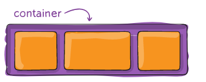
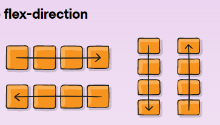
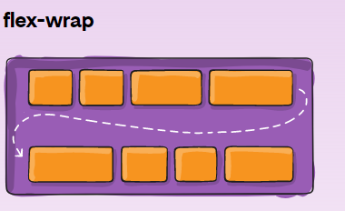

Flexbox
Flexbox tiene como objetivo proporcionar una forma más eficiente de diseñar, alinear y distribuir el espacio entre los elementos en un contenedor, incluso cuando su tamaño es desconocido y/o dinámico (por lo tanto, el palabra “flexionar”).La idea principal detrás del diseño flexible es darle al contenedor la capacidad de modificar el ancho/alto (y el orden) de sus elementos para llenar mejor el espacio disponible (principalmente para adaptarse a todo tipo de dispositivos de visualización y tamaños de pantalla). Un contenedor flexible expande los elementos para llenar el espacio libre disponible o los reduce para evitar el desbordamiento. Lo que es más importante, el diseño de flexbox es independiente de la dirección a diferencia de los diseños normales (bloque que tiene una base vertical y en línea que tiene una base horizontal). Si bien funcionan bien para las páginas, carecen de flexibilidad (sin juego de palabras) para admitir aplicaciones grandes o complejas (especialmente cuando se trata de cambiar la orientación, cambiar el tamaño, estirar, encoger, etc.).
Propiedades de Flexbox


